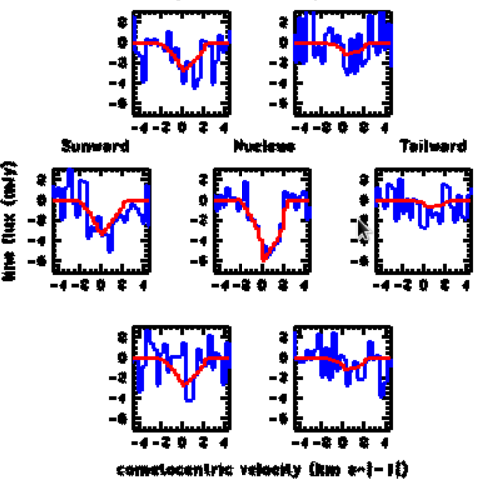

About
Hi there! If you couldn't tell, my name is Aysha Rahman. I graduated from Agnes Scott College with a Bachelor of Science in astrophysics, and I'm passionate about both physics and tech.
Check out some of the projects I've worked on below — I'm always working on something new!
Projects
Pokemon Data Science Project
Pokemon Data Science Project
What: This is a an analysis of a dataset of Pokemon stats, and its goal is to create an ideal "strongest" Pokemon team to use in a game.
Why: This was the final project for my PHY 231 Intro to Data Science class in college. The project was to pick a dataset (I got mine from Kaggle) and do an analysis of it using Python in Jupyter Notebook. I chose the Pokemon dataset, which is a csv file scraped from serebii.net, a website that has all kinds of information on the Pokemon franchise.
How: This was done with Python in Jupyter Notebook, and I used libraries such as pandas, altair, numpy, scikit-learn, and matplotlib.
Image: Free ICONS Library
Monte Carlo Tree Simulation
Monte Carlo Tree Simulation
What: A Monte Carlo simulation that generates a randomly branching tree.
Why: This was a project I did in college in an effort to assess the amount of light that a dormant tree was blocking from a solar panel on the roof of the Bradley Observatory. This code sets rules for generating the tree and produces the points that the tree inhabits.
How: This Monte Carlo simulation was written in C.
Research
Observations of the 18 cm OH Lines of 23 Comets
Observations of the 18 cm OH Lines of 23 Comets
What: This is research done with Dr. Amy Lovell from Agnes Scott College, modeling and mapping cometary coma kinematics based on observations of OH spectral lines from the Arecibo Observatory (rest in peace) and the Green Bank Telescope. Water molecules were modeled from the time of sublimation through photodissociation into OH ions to the destruction of the daughter OH molecules.
Why: Understanding the kinematics and evolutionary process of comets, which are some of the least evolved objects in our solar system, is critical to understanding the formation and conditions of the early solar system. Ground-based observations using the 100 meter Green Bank Telescope and 305 meter Arecibo telescope allow for mapping and modeling of the gas production rates and outflow velocities of 23 comets as they near perihelion.
How: We used VirtualBox to run programs on virtual machines using the Fedora distribution of the Linux operating system and used Octave and Gnuplot for analysis and graphing. The models were produced using Monte Carlo simulations of the sublimation of a million water molecules.
The poster was created for and presented at GRAM (Georgia Regional Astronomers' Meeting), and the presentation was created for a departmental seminar class at Clark Atlanta University.
Social behavior in Groups of Mating Male and Female Bean Beetles
Social behavior in Groups of Mating Male and Female Bean Beetles
What: This is behavioral biology research on male bean beetle (Callosobruchus maculatus) social behavior that I did in high school with Dr. Barbara Musolf from Clayton State University.
Why: Previous experiments with bean beetles showed that male bean beetles seemed not to show preference when interacting with other bean beetles. This experiment was done to determine what social behaviors male bean beetles performed and whether those interactions varied based on sex of the other beetles. We found that males spent most of their time mating with females, and when interacting with other males formed dominance hierarchies, which had not previously been studied in this species.
How: This was done with bean beetles bred in dishes of black-eyed peas. Beetles were then painted to distinguish them from one another and recorded for 4+ hours in a petri dish. We then played back the footage, recorded every instance of every type of interaction, and constructed ethograms.